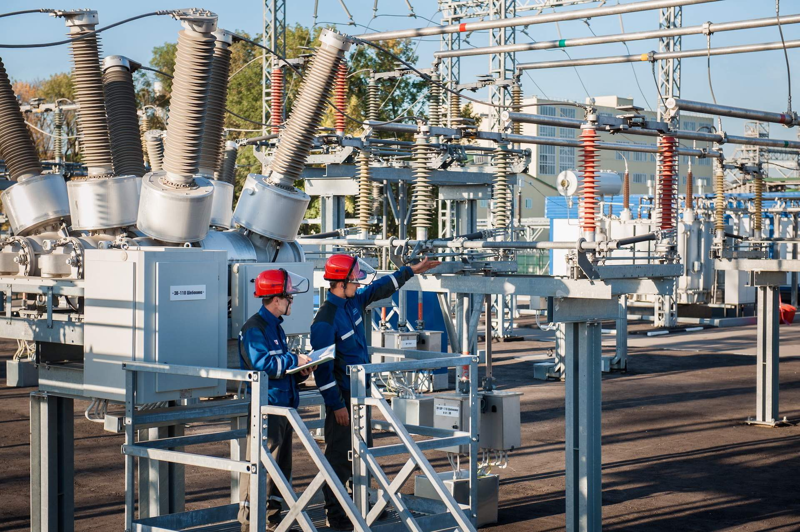
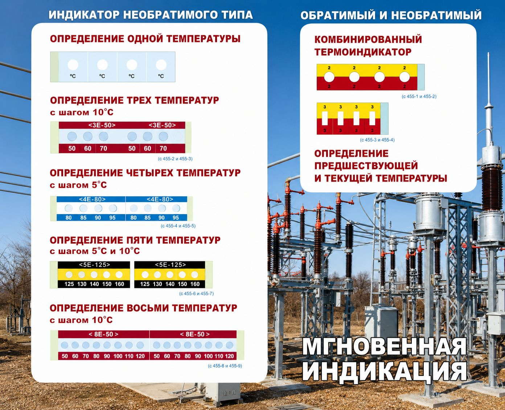
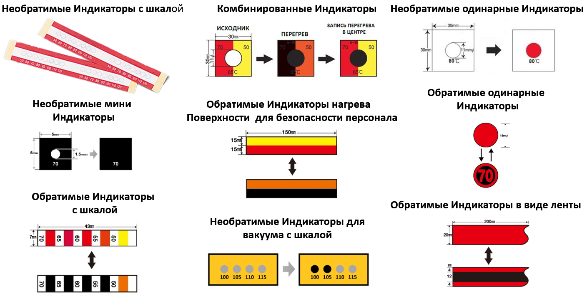
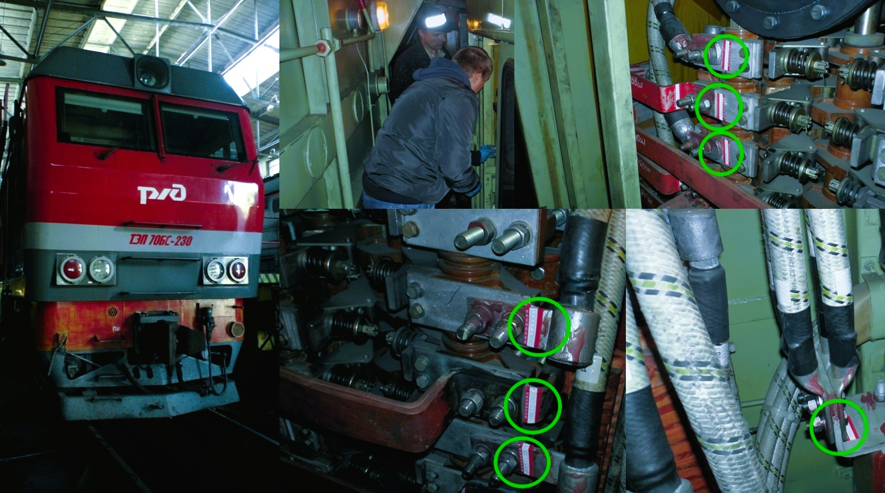
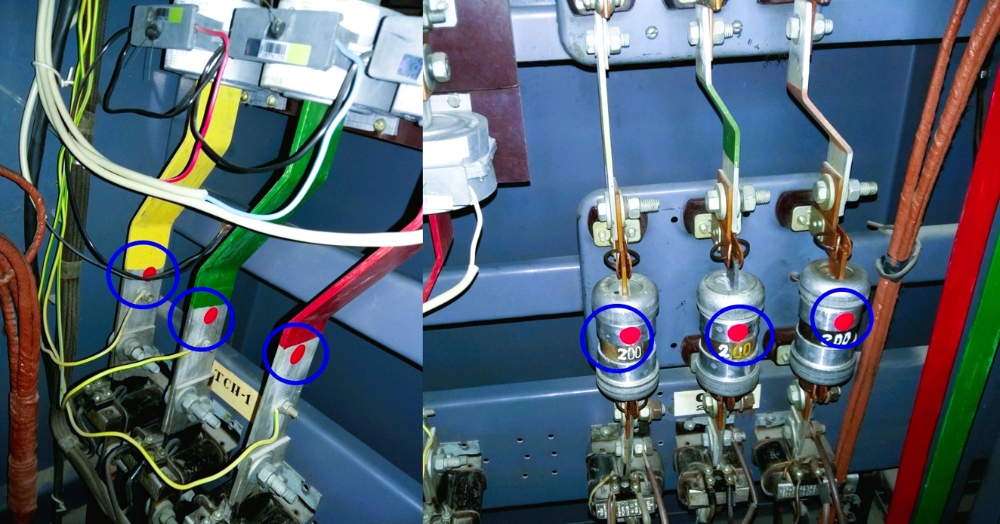
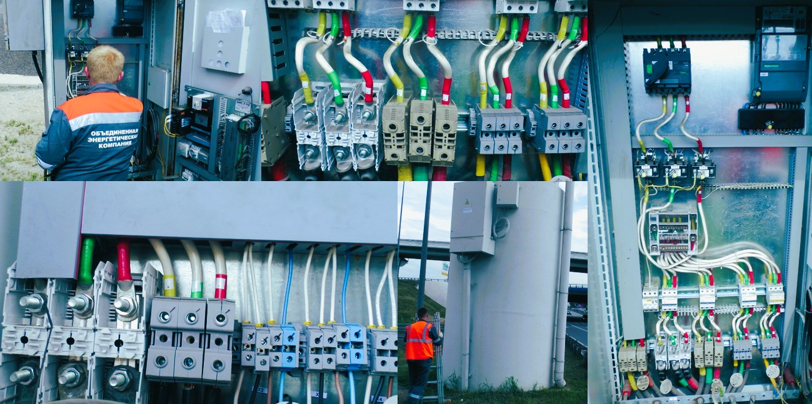
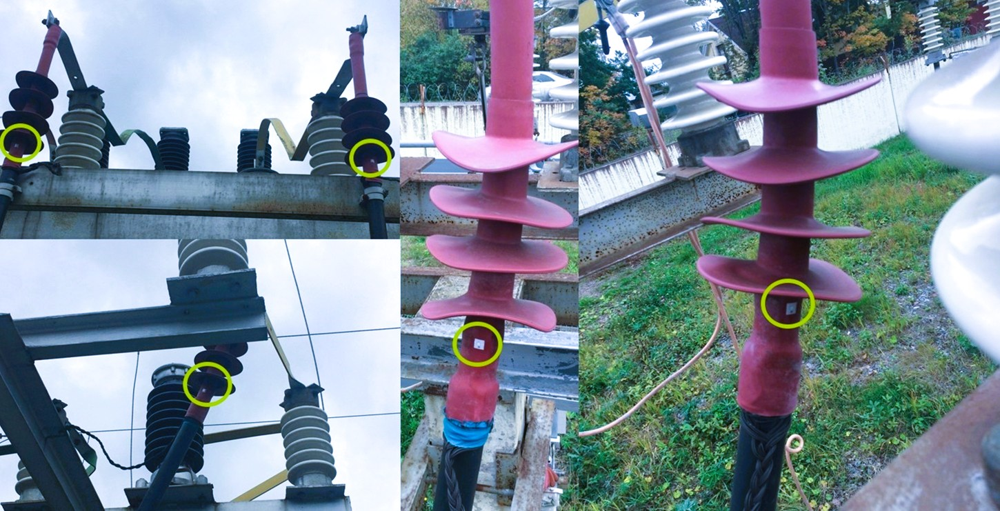
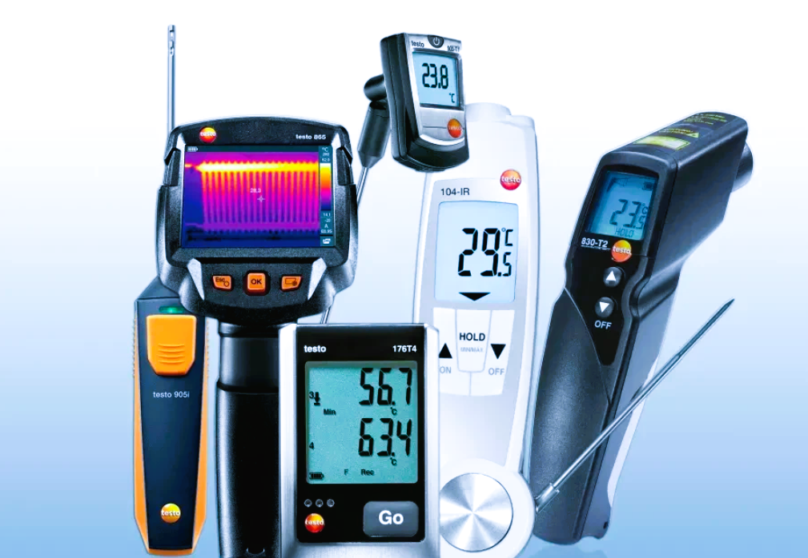
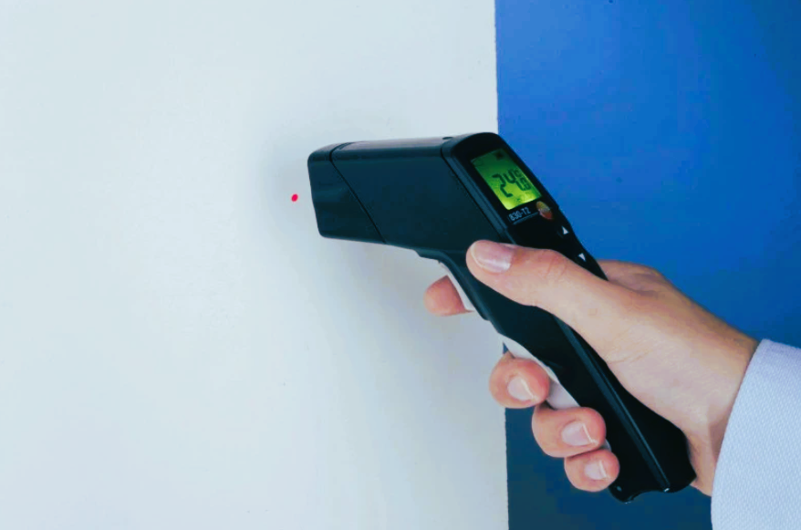

Температурные индикаторы ООО ИК ЯЛОС
ООО "Инновационная компания «Ялос» представляет на российском рынке широкую серию химических термоиндикаторов, активно используемые в разных отраслях промышленности и энергетике. На протяжении 35 лет, опыт практического применения термоиндикаторов доказал их высокую эффективность и надежность эксплуатации. Тысячи потребителей и многомиллионные тиражи различных видов термоиндикаторов, показывают устойчивый и нарастающий к ним спрос на отраслевых предприятиях многих стран. С каждым годом расширяются и возможные области их применения, а это в немалой степени определяется их великолепными техническими характеристиками.

ПРИМЕНЕНИЕ ТЕРМОИНДИКАТОРОВ ПОЗВОЛЯЕТ СНИЖАТЬ АВАРИЙНОСТЬ ОБОРУДОВАНИЯ НА ПРОИЗВОДСТВЕННЫХ МОЩНОСТЯХ ПО ПРИЧИНЕ ПЕРЕГРЕВОВ НА 15%-25%.
НАША ЗАЯВКА НА ПАТЕНТ "СПОСОБ НАНЕСЕНИЯ ТЕРМОПЛАВКИХ СОСТАВОВ" №2019138066
В чем преимущества работы с нашей компанией:
1) Мы специализируемся на разработке и продвижении на промышленный рынок, термоиндикаторов, проверенных на практике в течении 35 лет;
2) Мы представляем специализированные, профессиональные термоиндикаторы с очень высокой степенью надежности ( работа от 5 до 10 лет);
3) Мы сопровождаем каждый заказ клиента и консультируем по всем вопросам;
4) Мы предлагаем для предприятий, целостную систему предупреждения аварий, на основе применения различных схем установок термоиндикаторов;
5) Мы даем ГАРАНТИЮ на работу индикаторов на улице - 3 года, в помещении 5 лет. Это лучшие гарантии на рынке.


Химические термоиндикаторы подразделяются на 2 вида:
1 вид – обратимые термоиндикаторы;
2 вид – необратимые термоиндикаторы.
Отличительной особенностью их между собой является тот факт, что при перегревах на оборудовании, необратимые термоиндикаторы после своего срабатывания путем изменения цвета, в условиях падения температуры ниже порогового значения не возвращаются в свой первоначальный цвет. В то время, как обратимые термоиндикаторы возвращаются в свой исходный цвет.
Оба вида термоиндикаторов имеют свои преимущества и области применения. Необратимые термоиндикаторы применяются там, где обслуживающий персонал, должен точно знать, был ли за время его отсутствия на поверхности оборудования нагрев до контролируемой температуры, а обратимые термоиндикаторы применяются там, где на момент осмотра персонала, можно наглядно увидеть текущую температуру на контролируемой поверхности обследуемого оборудования.
Термоиндикаторы усиливают эффективность визуального метода выявления перегрева энергетического и теплового оборудования.


В чем состоит их эффективность применения?
- Гарантированное обнаружение перегрева на оборудовании (постоянная запись температуры у необратимых индикаторов);
- Прямое считывание температуры на контролируемых поверхностях оборудования;
- Независимость от погодных условий;
- Устойчив к различным видам загрязнений;
- Независимость от энергоснабжения, технического обслуживания и настроек;
- Cверхлегкие, малоразмерные (имеют размер и вес стикера);
- Подходят для установки в труднодоступные места;
- Свидетельствует о факте перегрева (подшиваются как доказательство в журналы осмотров и ремонтов);
- Гарантия на работу индикаторов - на улице 3 года, в помещении 5 лет;
- Срок эксплуатации 4-10 лет;
- Многократное использование обратимых термоиндикаторов в течении нескольких лет;
- Экономичное решение вопросов безопасности на производствах;
- Простота и легкость считывания показаний термоиндикаторов;
- Функционально дополняют действующие автоматизированные системы;
- При одновременной установке индикаторов с шкалой или нескольких одинарных индикаторов с различными температурами срабатывания, позволит контролировать как пороговую температуру, так и предварительную, для профилактического ремонта;
- Низкая цена;


Сравнение с использованием тепловизоров и цифровых термометров
Термоиндикаторы занимают свою нишу в средствах контроля температурных перегревов теплового и энергетического оборудования, однако, они не заменяют различные электронные системы безопасности, в том числе не заменяют использование тепловизоров и цифровых термометров, у которых есть свои ограничения на применение. Также важен тот факт, что применяемые тепловизоры и цифровые термометры позволяет увидеть только текущую температуру объектов.
Ограничения и условия использования Тепловизоров «Инструкция по тепловому контролю и диагностике»
- тепловизионный метод контроля температур используется с целью обнаружения и идентификации участков нагрева;
- контроль температур тепловизионным методом рекомендовано проводить на наружных поверхностях, не подвергающихся воздействию солнечной радиации в течение предшествующих 12 часов;
- контроль температур тепловизионным методом проводится на устройствах, находящихся на открытом воздухе. Однако, не рекомендуется проводить во влажную погоду, а именно: в дождь, туман, снегопад, при наличии инея, и любой другой влаги. Также такой метод температурного контроля ограничивает скорость ветра, которая не должна превышать 7 м/с и температуру воздуха , которая должна быть в пределах рабочего диапазона температур эксплуатации тепловизора;
- контроль температур тепловизионным методом не рекомендуется проводить на поверхностях,коэффициент излучения который ниже 0,7;
- при проведении температурного контроля на объектах с коэффициентом излучения ниже 0,7, поверхность объекта обрабатывают специальными средствами окрашивания, чернения, окисления и т.д., при этом температура окружающего воздуха на рабочем месте, должна быть в диапазоне от + 5 С до + 30 С;
-при проведении температурного контроля в зимний период, устройство необходимо транспортировать и хранить в специальном кейсе-термосе с подогревом;
- время эксплуатации тепловизора не должно превышать значения, установленного в его техническом паспорте. При низких температурах происходит запотевание оптики, быстрый разряд аккумулятора, образование конденсата внутри устройства, что негативным образом сказывается на работе и как следствие, приводит к неисправности прибора;
- при работе с тепловизором, необходимо акцентировать внимание на правильный выбор коэффициента излучательной способности контролируемого объекта;
При этом, для последующего проведения расчетов фактических характеристик контролируемого объекта и обнаруженных дефектов следует применять расчетные модели с учетом особенностей стационарных и нестационарных процессов теплопередачи.


Ограничения и условия использования Инфракрасных пирометров
Для определения точной температуры любым инфракрасным радиационным термометром, необходимо обладать определенными знаниями с соблюдением правильной методики измерений:
- Перед каждым измерением необходим контроль правильного выбора значений излучательной способности на измеряемой поверхности. Измерения, проведенные с иным значением, недостоверны.
- Каждый материал имеет своё значение излучательной способности (в том числе, имеет значение и состояние поверхности этого материала: шероховатости, окисления, и т. д.). Этот факт также необходимо учитывать при выборе правильного коэффициента излучения, и в случае, если они неизвестны, то измерения будут не верными.
- Индицируемая температура будет не верна, если размер объекта меньше поля зрения.
- Если объект, температура которого должна быть измерена, не заполняет все поле зрения, прибор принимает излучение от других объектов окружающей среды, тем самым вызывая погрешность измерения.
- Необходимо исключить боковую подсветку от окружающих объектов или непременно учитывать её влияния на результат измерения.
- Измерения делаются только в момент проверки. В случае, если перегрев имел место быть до измерения контроля температуры, установить это невозможно.
- У пирометров со стандартно установленной фиксированной излучательной способностью 0,95, температуру объектов с коэффициентом излучения отличным от 0,95 необходимо вычислять по специальным таблицам.
- Необходимо учитывать наличие погрешности измерений в зимних условиях эксплуатации.